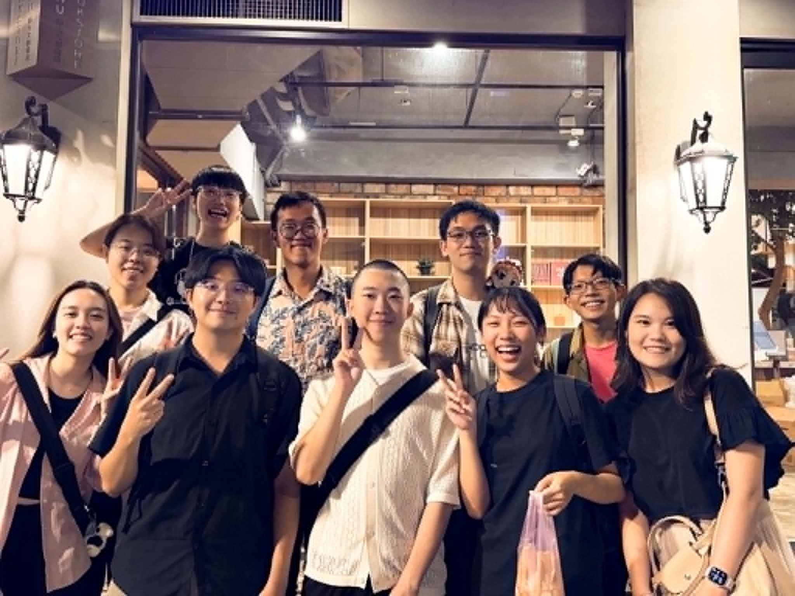
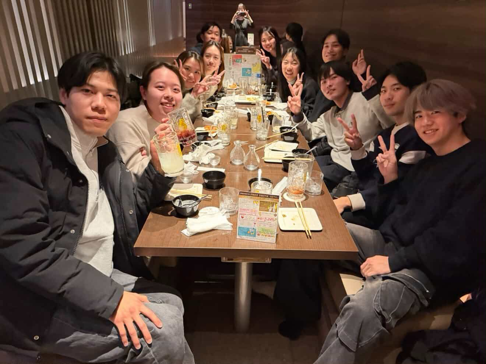

Welcome to the Manuel Maestre-Reyna Lab
Led by Dr. Manuel Maestre-Reyna, our laboratory at the National Taiwan University (NTU) Department of Chemistry specializes in Structural Biology and Time-Resolved Crystallography.
We are dedicated to utilizing advanced spectroscopy and cutting-edge X-ray techniques to observe the dynamic reaction processes of biological macromolecules at the atomic scale. By capturing these transient intermediate states, we aim to unravel the fundamental mechanisms of complex enzymes, such as DNA photolyases.
Laboratory Life




